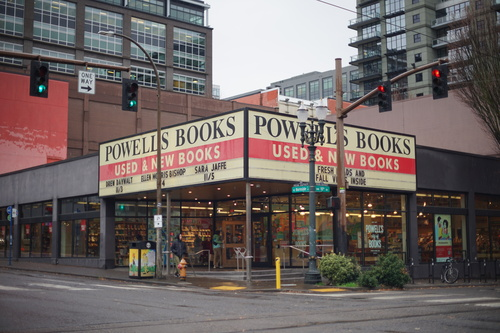
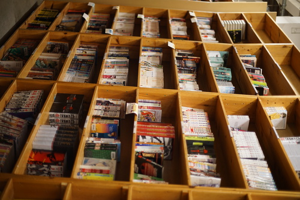
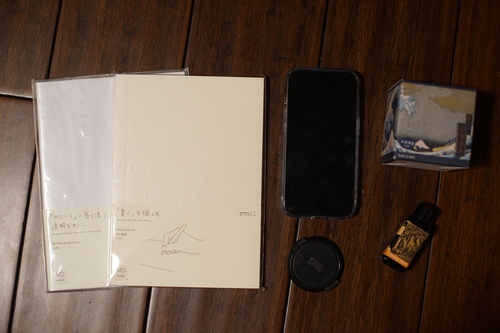
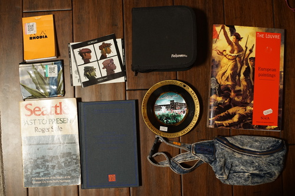
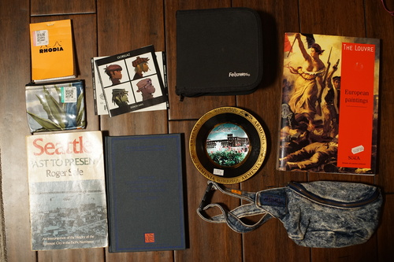

I'm sure you are all very excited to hear my Portland trip was great!! I'll be posting my Kumoricon report soon, so please hold on to your horses!
It's a little embarrassing to admit, but I failed Inktober on Inktober 31st. My sketchbook scan will also be up soon!

On Monday after the con, I went shopping with Linus, Kohi, and Elise!
Our first stop was coffee, but our second stop was Powell's Books.
I've heard many things about Powell's books. It's a book paradise. It's a multi story bookstore that covers an entire city block. It has more books than you have ever seen in your life!
I've been looking to buy Loveless vol 9-13, but they only had 1-8. I won't complain too much because they did indeed have 8 volumes of Loveless. There was a good amount of manga, but not anything I was seeking out. I probably would have bought a Leyendecker art book, but they didn't stock any!

My main goal was to visit Oblation Papers, which I have been dreaming about for 7 months now.
I didn't have a lot of time to browse. They really had a lot to offer! I could see their inventory on their site, so I knew I was unlikely to find a Sailor pen I was enamored with. What I really wanted was to test the Sailor and gold LAMY nibs! I decided I like Sailor zoom the most and LAMY 14k M was extremely smooth. I hope that the Sailor I fall in love with will be released with the zoom nib!
They have 2 swatch books. One was sorted by color and the other was sorted by brand. All swatches were inked and not printed. Their "out of stock" method was to slip a piece of paper into the swatchbook, which was pretty unreliable. If you really like an ink, they'll be happy to look for it for you!
Fortunately or unfortunately, the fountain pen otaku was on lunch or break during my visit. It saved inevitable chatting time, but the other employees kept having to go to the back to relay my questions to her!
Here's my non-Kumoricon related haul:
I'm having trouble getting my family members to contact Verizon and switch my service over, but I can't wait to have a phone with a functional battery again
I thought I dropped it at Pizza or Oblation and it was gone forever, but I found it in my Oblation bag when I got home.
I learned afterwards that cherry sunburst is an option and now I need a Yui Hirasawa pen
 

Bought specifically for my Wii and WiiU games
We are definitely not making good decisions.